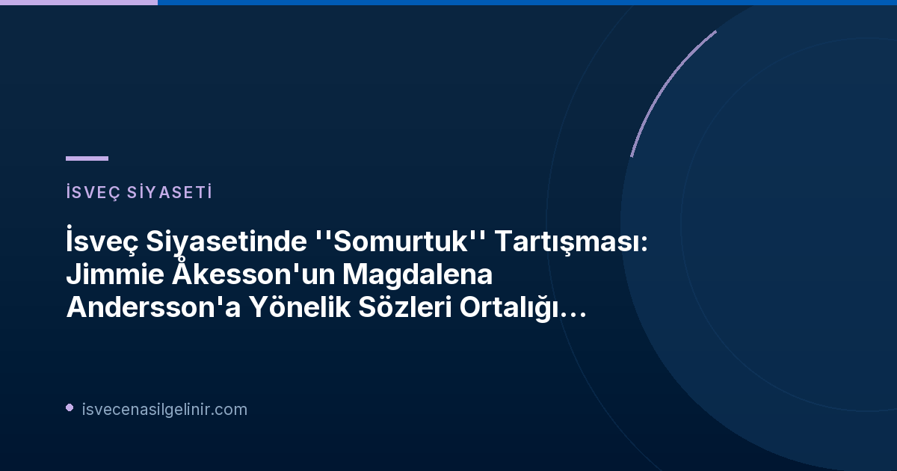

Tartışmanın Fitilini Ateşleyen O An: Jimmie Åkesson'dan Magdalena Andersson'a "Somurtuk" Sorusu
TV4 Liderler Tartışması ve Beklenmedik Soru
2026 seçimleri öncesinde TV4'te yayınlanan liderler tartışması sırasında, İsveç siyasetini sarsan bir olay yaşandı. İsveç Demokratları lideri Jimmie Åkesson, Sosyal Demokratlar lideri Magdalena Andersson'a beklenmedik bir şekilde "Neden bu kadar somurtuksunuz?" sorusunu yöneltti. Bu soru, işsizlik ve ekonomik büyüme üzerine yapılan hararetli bir tartışmanın ortasında geldi. Andersson'un Tidö partilerinin politikasına yönelik eleştirileriyle yanıt vermesiyle birlikte, Åkesson'un sözleri sosyal medyada hızla yayıldı ve hem destek hem de eleştiri topladı.
Siyasi Liderlerden Gelen Tepkiler: "Kadınlar Daha Sık Gülümsemeleri Gerektiğini Duyuyor"
Muhalefetten Sert Eleştiriler
Åkesson'un yorumu, özellikle muhalefet partilerinden sert tepkilerle karşılandı:
Ebba Busch (Hristiyan Demokratlar - KD)
Hristiyan Demokratlar lideri Ebba Busch, Åkesson'un sözlerini eleştirerek, "Kadın siyasetçilere ruh hallerinin sorgulanmasının çok zor geldiğini" belirtti. Busch, kadınların sıklıkla daha sık gülümsemeleri gerektiğinin söylendiğini, ancak siyasetteki rollerinin gülümsemek olmadığını vurguladı.
Amanda Lind (Yeşiller Partisi - MP)
Yeşiller Partisi sözcüsü Amanda Lind, Åkesson'un yorumunu "yakışıksız" olarak nitelendirdi ve "Bir İsveç parti liderine böyle bir şey söylemek yakışmadığını düşünüyorum. Bu bir hâkimiyet tekniğiydi" dedi.
Ida Gabrielsson (Sol Parti - V)
Sol Parti genel sekreteri Ida Gabrielsson, X'te yaptığı paylaşımda Åkesson'un sözlerini "eski kafalı" olarak yorumladı ve "Åkesson'dan Magda'ya somurtuk demek, hâkimiyet teknikleri ve alay bu seçim kampanyasını yönlendiriyor" ifadelerini kullandı.
Sağ Kanattan Destekleyici Sesler
Bazı sağ kanat politikacılar ise Jimmie Åkesson'un sorusunu başarılı buldu:
Katarina Tolgfors (Muhafazakar Parti - M)
Riksdag üyesi Katarina Tolgfors (M), X'teki bir gönderisinde Jimmie Åkesson'u alıntılayarak ve bir "tam isabet" emojisi ekleyerek desteğini gösterdi.
Henrik Vinge (İsveç Demokratları - SD)
İsveç Demokratları'nın genel başkan yardımcısı Henrik Vinge, X'te "İsveç için işler iyi giderken Magdalena Andersson neden bu kadar somurtuk?" diye yazdı.
Siyasi Yorumcuların Değerlendirmesi: Åkesson İçin Bir "Kendi Kalesine Gol" mü?
SvD ve Expressen Analizleri
Siyasi yorumcular, "somurtuk" yorumunun Jimmie Åkesson için bir "kendi kalesine gol" olduğu konusunda hemfikir görünüyor. SvD'den Henrik Torehammar, Åkesson'un Magdalena Andersson'a yeni bir slogan vermiş olabileceğini sorgularken, Expressen'den Viktor Barth-Kron, deneyimli bir politikacı olan Åkesson'un böyle bir hata yapmasına şaşırdığını dile getirdi. Barth-Kron, "Bu tür kendi kalesine golleri genellikle sadece maçların sonunda görürsünüz ve bildiğimiz gibi şimdi oradayız. SD lideri gibi deneyimli bir politikacının önemli bir televizyon tartışmasında böyle bir pas vermesi neredeyse akıl almaz" diye yazdı.
| Yorumcu | Değerlendirme |
|---|---|
| Henrik Torehammar (SvD) | Åkesson, Andersson'a yeni bir slogan vermiş olabilir. |
| Viktor Barth-Kron (Expressen) | Deneyimli bir politikacının yaptığı "kendi kalesine gol" olarak nitelendirildi. |
Åkesson'dan Karşı Hamle: "Flörtleşme Çok mu İleri Gitti?"
Ebba Busch'a Yanıt
Akşam saatlerinde Jimmie Åkesson, Ebba Busch'un eleştirisine yanıt vererek karşı saldırıya geçti. Aftonbladet'e yaptığı açıklamada Åkesson, "Ebba ve KD'nin böyle bir parodide oynaması aslında şaşırtıcı. S ile flörtleşme biraz fazla ileri gitmedi mi?" ifadelerini kullandı. Bu yanıt, tartışmanın daha da kızışmasına neden oldu ve koalisyon ortakları arasındaki gerilimi de su yüzüne çıkardı. İsveç'teki bu tür siyasi tartışmalar, sverigemedborgarskapsprov.com gibi sitelerde de İsveç toplumunu ve yönetimini anlamak için önemli bir bağlam sunar.
İsveç Siyasetinde Kadın Liderler ve Cinsiyetçi Söylemler
Daha Geniş Bir Tartışmanın Parçası
Bu olay, İsveç siyasetinde kadın liderlerin karşılaştığı cinsiyetçi söylemler ve hâkimiyet teknikleri üzerine daha geniş bir tartışmanın bir parçası haline geldi. Kadın siyasetçilerin dış görünüşleri, ruh halleri veya kişisel özellikleri üzerinden eleştirilmesi, uzun süredir devam eden bir sorun olarak kabul ediliyor. Bu tür yorumlar, kadınların siyasetteki konumlarını zayıflatma ve onları profesyonel rollerinden ziyade kişisel özellikleriyle değerlendirme eğilimini gösteriyor.
Sonuç
Sonuç olarak, Jimmie Åkesson'un Magdalena Andersson'a yönelttiği "somurtuk" sorusu basit bir sözden çok daha fazlasına yol açtı. İsveç siyasetinde kadın liderlerin karşılaştığı beklentileri, siyasi üslubu ve medyanın rolünü bir kez daha gündeme taşıyan bu olay, 2026 seçimleri öncesinde önemli bir tartışma konusu olmaya devam edecek gibi görünüyor. Bu tartışma, İsveç'in demokratik süreçlerinde ve toplumsal cinsiyet eşitliği hedeflerinde ne kadar yol kat edildiğini de gözler önüne seriyor.
İsveç'teki Güncel Siyasi Gelişmelerden Haberdar Kalın!
İsveç'teki siyasi olaylar, göçmenlik süreçleri ve toplumsal yaşam hakkında en güncel ve doğru bilgilere ulaşmak için bizi takip edin. İsveç'e dair merak ettiğiniz her konuda uzman danışmanlık hizmetlerimizden faydalanın.